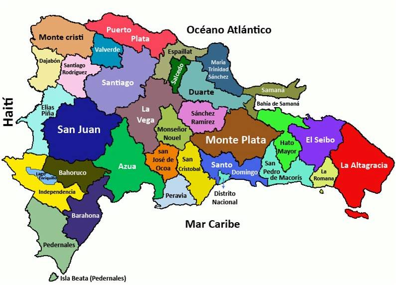

<h1>Dominican Republic</h1>
<p id=top></p>
<app-down></app-down>


<ol>
  <li><a href="https://es.wikipedia.org/wiki/Azua">Azua</a></li>
  <ul>
    <li><a href="https://en.wikipedia.org/wiki/Azua,_Dominican_Republic ">Azua de Compostela</a></li>
    <li><a href="https://en.wikipedia.org/wiki/Esteban%C3%ADa">Estebanía</a></li>
    <li><a href="https://es.wikipedia.org/wiki/Guayabal_(Rep%C3%BAblica_Dominicana)"> Guayabal</a></li>
    <li><a href="https://en.wikipedia.org/wiki/Las_Charcas"> Las Charcas</a></li>
    <li><a href="https://en.wikipedia.org/wiki/Las_Yayas_de_Viajama"> Las Yayas de Viajama</a></li>
    <li><a href=" https://en.wikipedia.org/wiki/Padre_Las_Casas,_Dominican_Republic"> Padre Las Casas</a></li>
    <li><a href="https://en.wikipedia.org/wiki/Peralta,_Azua"> Peralta</a></li>
    <li><a href="https://en.wikipedia.org/wiki/Pueblo_Viejo,_Dominican_Republic"> Pueblo Viejo</a></li>
    <li><a href="https://en.wikipedia.org/wiki/Sabana_Yegua"> Sabana Yegua</a></li>
    <li><a href="https://en.wikipedia.org/wiki/Tábara_Arriba">Tábara Arriba</a></li>
   
  </ul>
  <li><a href="https://en.wikipedia.org/wiki/Baoruco_Province "> </a>Baoruco</li>
  <ul>
    
    <li><a href="https://en.wikipedia.org/wiki/Cabral,_Dominican_Republic"> Cabral</a></li>
    <li><a href="https://en.wikipedia.org/wiki/El_Peñón,_Dominican_Republic"> El Peñon</a></li>   
    <li><a href="https://en.wikipedia.org/wiki/Enriquillo,_Barahona "> Enriquillo</a></li> 
    <li><a href="https://en.wikipedia.org/wiki/Fundación,_Dominican_Republic "> Fundación</a></li> 
    <li><a href="https://en.wikipedia.org/wiki/Jaquimeyes"> Jaquimeyes</a></li>
    <li><a href="https://en.wikipedia.org/wiki/La_Ciénaga,_Barahona"> La Ciénaga</a></li>
    <li><a href="https://en.wikipedia.org/wiki/Las_Salinas"> Las Salinas</a></li>
    <li><a href="https://en.wikipedia.org/wiki/Para%C3%ADso,_Barahona"> Paraíso</a></li>
    <li><a href="https://en.wikipedia.org/wiki/Polo,_Dominican_Republic"> Polo</a></li> 
    <li><a href="https://es.wikipedia.org/wiki/Vicente_Noble_(municipio)"> Vincente Noble</a></li>
   
  </ul>
  <li><a href="https://en.wikipedia.org/wiki/Barahona_Province "> Barahona</a></li>
  <ul>
    <li><a href="https://en.wikipedia.org/wiki/Neiba"> Neiba</a></li>
    <li><a href="https://en.wikipedia.org/wiki/Galván,_Dominican_Republic"> Galván</a></li>
    <li><a href="https://en.wikipedia.org/wiki/Los_R%C3%ADos,_Dominican_Republic"> Los Ríos</a></li>
    <li><a href="https://en.wikipedia.org/wiki/Tamayo,_Dominican_Republic"> Tamay</a></li>
    <li><a href="https://en.wikipedia.org/wiki/Villa_Jaragua"> Villa Jaragua</a></li>
  </ul>
  <li><a href="https://en.wikipedia.org/wiki/Dajabón_Province "> Dajabón</a></li>
  <ul>
    <li><a href=" https://en.wikipedia.org/wiki/Dajab%C3%B3n"> Dajabón</a></li>
    <li><a href=" https://en.wikipedia.org/wiki/El_Pino,_Dominican_Republic"> El Pino</a></li>
    <li><a href="https://en.wikipedia.org/wiki/Loma_de_Cabrera"> Loma de Cabrera</a></li>
    <li><a href="https://en.wikipedia.org/wiki/Partido,_Dominican_Republic"> Partido</a></li>
    <li><a href="https://en.wikipedia.org/wiki/Restauraci%C3%B3n"> Restauración</a></li>
  </ul>
  <li><a href="https://en.wikipedia.org/wiki/Duarte_Province"> Duarte</a></li>
  <ul>
    <li><a href="https://en.wikipedia.org/wiki/Duarte_Province"> Duarte</a></li>
    <li><a href="https://en.wikipedia.org/wiki/San_Francisco_de_Macor%C3%ADs"> San Francisco de Macorís</a></li>
    <li><a href="https://en.wikipedia.org/wiki/Arenoso"> Arenoso</a></li>
    <li><a href="https://en.wikipedia.org/wiki/Castillo,_Dominican_Republic"> Castillo</a></li>
    <li><a href="https://en.wikipedia.org/wiki/Hostos"> Hostos</a></li>
    <li><a href="https://en.wikipedia.org/wiki/Las_Guáranas"> Las Guáranas</a></li>
    <li><a href="https://en.wikipedia.org/wiki/Las_Guáranas"> Pimentel</a></li>
    <li><a href="https://en.wikipedia.org/wiki/Villa_Riva"> Villa Riva</a></li>
  </ul>
  <li><a href="https://en.wikipedia.org/wiki/El_Seibo_Province"> El Seibo</a></li>
  <ul>
    
    <li><a href=" https://en.wikipedia.org/wiki/El_Seibo,_Dominican_Republic"> Santa Cruz del Seibo</a></li>
    <li><a href=" https://en.wikipedia.org/wiki/Miches"> Miches</a></li>
  </ul>
  <li><a href="https://en.wikipedia.org/wiki/El%C3%ADas_Piña_Province"> Elías Piña</a></li>
  <ul>
    
    <li><a href=" https://en.wikipedia.org/wiki/Comendador,_Dominican_Republic"> Comendador</a></li>
    <li><a href=" https://en.wikipedia.org/wiki/El_Llano,_Dominican_Republic"> El Llano</a></li>
    <li><a href="https://en.wikipedia.org/wiki/Hondo_Valle"> Hondo Valle</a></li>
    <li><a href=" https://en.wikipedia.org/wiki/Juan_Santiago,_Dominican_Republic"> Juan Santiago</a></li>
    <li><a href=" https://en.wikipedia.org/wiki/Pedro_Santana,_Dominican_Republic"> Pedro Santana</a></li>

  </ul>
  <li><a href=" https://en.wikipedia.org/wiki/Hato_Mayor_Province">Espaillat</a></li>
  <ul>
    
    <li><a href=" https://en.wikipedia.org/wiki/Cayetano_Germosén"> Cayetano Germosén</a></li>
    <li><a href="  https://en.wikipedia.org/wiki/Gaspar_Hernández"> Gaspar Hernández</a></li>
    <li><a href="  https://en.wikipedia.org/wiki/Jamao_al_Norte"> Jamao al Norte</a></li>
    <li><a href=" https://en.wikipedia.org/wiki/Moca,_Dominican_Republic"> Moca</a></li>
    <li><a href=" https://en.wikipedia.org/wiki/Pedro_Santana,_Dominican_Republic"> San Victor</a></li>
    <li><a href=" https://en.wikipedia.org/wiki/San_V%C3%ADctor"> Pedro Santana</a></li>
  </ul>
  <li><a href="https://en.wikipedia.org/wiki/Dajabón_Province ">Hato Mayor</a></li>
  <ul>

    <li><a href=" https://en.wikipedia.org/wiki/El_Valle,_Dominican_Republic "> El Valle</a></li>
    <li><a href=" https://en.wikipedia.org/wiki/Hato_Mayor_del_Rey">Hato Mayor del Rey</a></li>
    <li><a href="https://en.wikipedia.org/wiki/Sabana_de_la_Mar"> Sabana del Mar</a></li>
  </ul>
  <li><a href="https://es.wikipedia.org/wiki/Provincia_de_Hermanas_Mirabal">Hermanas Mirabal</a></li>

  <ul>
   
    <li><a href="https://es.wikipedia.org/wiki/Salcedo_(República_Dominicana)"> Salcedo</a></li>
    <li><a href=" https://es.wikipedia.org/wiki/Tenares">Tenares</a></li>
    <li><a href="https://es.wikipedia.org/wiki/Villa_Tapia"> Villa Tapia</a></li>
    
  </ul>
  <li><a href="https://en.wikipedia.org/wiki/Independencia_Province"> Independencia</a></li>
  <ul>
    
    <li><a href=" https://en.wikipedia.org/wiki/Cristóbal,_Dominican_Republic">Cristóbal</a></li>
    <li><a href="https://en.wikipedia.org/wiki/Duvergé”>Duvergé"> Duverge</a></li>
    <li><a href=" https://en.wikipedia.org/wiki/Jiman%C3%AD">Jimaní</a></li>
    <li><a href=" https://en.wikipedia.org/wiki/La_Descubierta"> La Descubierta</a></li>
    <li><a href="https://en.wikipedia.org/wiki/Mella,_Independencia "> Mella</a></li>
    <li><a href="https://en.wikipedia.org/wiki/Postrer_R%C3%ADo "> Postrer Río</a></li>
  </ul>
  <li><a href="https://en.wikipedia.org/wiki/La_Altagracia_Province#Municipalities_and_municipal_districts "> La Altagracia</a></li>
  <ul>
    <li><a href="  https://en.wikipedia.org/wiki/Higüey,_Dominican_Republic"> Higüey</a></li>
    <li><a href="https://en.wikipedia.org/wiki/San_Rafael_del_Yuma”>San Rafael de Yuma">San San_Rafael_del_Yuma</a></li>
    <li><a href=" https://en.wikipedia.org/wiki/Saona_Island "> Saona</a></li>
    
  </ul>
  <li><a href="https://es.wikipedia.org/wiki/Provincia_de_La_Romana "> La Romana</a></li>
  <ul>
    <li><a href="  https://es.wikipedia.org/wiki/La_Romana_(municipio) "> La Romana</a></li>
<li><a href="https://en.wikipedia.org/wiki/San_Rafael_del_Yuma”> Guaymate">Guaymate</a></li>
<li><a href=" https://es.wikipedia.org/wiki/Villa_Hermosa_(La_Romana) ">Villa Hermosa</a></li>
  </ul>

<li><a href="https://es.wikipedia.org/wiki/Provincia_de_La_Vega"> La Vega</a></li>

  <ul>
    <li><a href="https://es.wikipedia.org/wiki/Constanza_(República_Dominicana)"> Constanza</a></li>
    <li><a href=" https://es.wikipedia.org/wiki/Jarabacoa "> Jarabacoa</a></li>
    <li><a href="  https://es.wikipedia.org/wiki/Jima_Abajo"> Jima Abajo</a></li>
  </ul>
  <li><a href="https://es.wikipedia.org/wiki/Provincia_de_Mar%C3%ADa_Trinidad_Sánchez"> </a>Maria Trinidad Sanchez</li>
  <ul>
    <li><a href="https://es.wikipedia.org/wiki/Nagua ">Nagua </a></li>
<li><a href="https://es.wikipedia.org/wiki/Cabrera_(República_Dominicana)"> Cabrera</a></li>
<li><a href=" https://es.wikipedia.org/wiki/El_Factor "> El Factor</a></li>
<li><a href="https://es.wikipedia.org/wiki/R%C3%ADo_San_Juan_(municipio) ">Rio San Juan </a></li>
  </ul>
  <li><a href="https://es.wikipedia.org/wiki/Provincia_de_Monse%C3%B1or_Nouel"> Monseñor Nouel</a></li>
  <ul>
  <li><a href=" https://en.wikipedia.org/wiki/Bonao"> Bonao</a></li>
<li><a href=" https://en.wikipedia.org/wiki/Maimón"> Maimón</a></li>
<li><a href="  https://en.wikipedia.org/wiki/Piedra_Blanca"> Piedra Blanca</a></li>
  </ul>
  <li><a href="https://es.wikipedia.org/wiki/Provincia_de_Monte_Cristi "> Montecristi</a></li>
  <ul>
    <li><a href=" https://es.wikipedia.org/wiki/Castañuelas_(República_Dominicana) "> Castañuela</a></li>
    <li><a href=" https://es.wikipedia.org/wiki/Guayub%C3%ADn "> Guayabin</a></li>
    <li><a href=" https://es.wikipedia.org/wiki/Las_Matas_de_Santa_Cruz "> Las Matas de Santa Cruz</a></li>
    <li><a href=" https://es.wikipedia.org/wiki/Pepillo_Salcedo  "> Pepillo Salcedo</a></li>
    <li><a href=" https://es.wikipedia.org/wiki/Villa_Vásquez  "> Villa Vasquez</a></li>
  </ul>
  <li><a href="https://en.wikipedia.org/wiki/Monte_Plata_Province"> Monte Plata</a></li>
  <ul>
    <li><a href=" https://en.wikipedia.org/wiki/Bayaguana "> Bayaguana</a></li>
    <li><a href=" https://en.wikipedia.org/wiki/Monte_Plata"> Monte Plata</a></li>
    <li><a href="  https://en.wikipedia.org/wiki/Peralvillo "> Peralvillo</a></li>
    <li><a href=" https://en.wikipedia.org/wiki/Sabana_Grande_de_Boyá ">Sabana Grande de Boyá</a></li>
    <li><a href=" https://en.wikipedia.org/wiki/Yamasá  "> Yamasá</a></li>
  </ul>
  <li><a href="https://en.wikipedia.org/wiki/Pedernales_Province "> Pedernales</a></li>
  <ul>
    
    <li><a href=" https://en.wikipedia.org/wiki/Pedernales,_Dominican_Republic"> Pedernales</a></li>
    <li><a href="https://en.wikipedia.org/wiki/Oviedo,_Dominican_Republic"> Oviedo</a></li>
  </ul>
  <li><a href="https://en.wikipedia.org/wiki/Peravia_Province "> Peravia</a></li>
  <ul>
  <li><a href=" https://en.wikipedia.org/wiki/Baní"> Bani</a></li>
<li><a href="https://en.wikipedia.org/wiki/Matanzas,_Dominican_Republic"> Matanzas</a></li>
<li><a href="https://en.wikipedia.org/wiki/Nizao"> Nizao</a></li>
  </ul>
  <li><a href="https://en.wikipedia.org/wiki/Puerto_Plata_Province "> Puerto Plata</a></li>
  <ul>
   
    <li><a href="https://en.wikipedia.org/wiki/Puerto_Plata,_Dominican_Republic ">Altamira</a></li>
    <li><a href="https://en.wikipedia.org/wiki/Guananico "> Guananico</a></li>
    <li><a href="https://en.wikipedia.org/wiki/Imbert,_Puerto_Plata "> Imbert</a></li>
    <li><a href="https://en.wikipedia.org/wiki/Los_Hidalgos "> Los Hidalgos</a></li>
    <li><a href="https://en.wikipedia.org/wiki/Sosúa"> Sosúa</a></li>
    <li><a href="https://en.wikipedia.org/wiki/Villa_Isabela  "> Villa Isabela</a></li>
    <li><a href="https://en.wikipedia.org/wiki/Villa_Montellano"> Villa Montellano</a></li>
  </ul>
  <li><a href="https://en.wikipedia.org/wiki/Samaná_Province "> Samaná</a></li>
  <ul>
    <li><a href="https://en.wikipedia.org/wiki/Sánchez,_Samaná  "> Sánchez</a></li>
    <li><a href="https://en.wikipedia.org/wiki/Samaná_(town) "> Samaná</a></li>
    <li><a href="https://en.wikipedia.org/wiki/Las_Terrenas"> Las Terrenas</a></li>
  </ul>
  <li><a href="https://en.wikipedia.org/wiki/San_Cristóbal_Province"> San Cristóbal</a></li>
  <ul>
    <li><a href="https://en.wikipedia.org/wiki/Bajos_de_Haina  "> Bajos de Haina</a></li>
    <li><a href=" https://en.wikipedia.org/wiki/San_Cristóbal,_Dominican_Republic"> San Cristóbal</a></li>
    <li><a href="https://en.wikipedia.org/wiki/Cambita_Garabitos"> Cambita Garabitos</a></li>
    <li><a href="https://en.wikipedia.org/wiki/Los_Cacaos">Los Cacaos</a></li>
    <li><a href="https://en.wikipedia.org/wiki/Sabana_Grande_de_Palenque"> Sabana Grande de Palenque</a></li>
    <li><a href="https://en.wikipedia.org/wiki/San_Gregorio_de_Nigua  "> San Gregorio de Nigua</a></li>
    <li><a href="https://en.wikipedia.org/wiki/Yaguate"> Yaguate</a></li>
    <li><a href="https://en.wikipedia.org/wiki/Villa_Altagracia"> Villa Altagracia</a></li>
    
  </ul>
  <li><a href=" https://en.wikipedia.org/wiki/San_José_de_Ocoa_Province "> San José de Ocoa</a></li>
  <ul>
    <li><a href=" https://en.wikipedia.org/wiki/Rancho_Arriba ">Rancho Arriba</a></li>
<li><a href=" https://en.wikipedia.org/wiki/Sabana_Larga"> Sabana Larga</a></li>
<li><a href="https://en.wikipedia.org/wiki/San_José_de_Ocoa"> San José de Ocoa</a></li>
  </ul>
  <li><a href="  https://en.wikipedia.org/wiki/San_Juan_Province_(Dominican_Republic)  "> San Juan</a></li>
  <ul>
    <li><a href=" https://en.wikipedia.org/wiki/Rancho_Arriba "> Bohechío</a></li>
<li><a href=" https://en.wikipedia.org/wiki/El_Cercado"> El Cercado</a></li>
<li><a href="https://en.wikipedia.org/wiki/Juan_de_Herrera,_Dominican_Republic"> Juan de Herrera</a></li>
<li><a href=" https://en.wikipedia.org/wiki/Las_Matas_de_Farfán "> Las Matas de Farfán</a></li>
  </ul>
  <li><a href="https://en.wikipedia.org/wiki/San_Pedro_de_Macor%C3%ADs_Province">San Pedro de Macoris</a></li>
  <ul>
    <li><a href="https://en.wikipedia.org/wiki/Consuelo,_Dominican_Republic">Consuelo</a></li>
<li><a href="https://en.wikipedia.org/wiki/Guayacanes,_Dominican_Republic">Guayacanes</a></li>
<li><a href="https://en.wikipedia.org/wiki/Quisqueya,_Dominican_Republic">Quisqueya</a></li>
<li><a href="https://en.wikipedia.org/wiki/Ram%C3%B3n_Santana">Ramon Santana</a></li>
<li><a href="https://en.wikipedia.org/wiki/San_Jos%C3%A9_de_los_Llanos">San Jose de los Llanos</a></li>
<li><a href="https://en.wikipedia.org/wiki/San_Pedro_de_Macor%C3%ADs">San Pedro de Macoris</a></li>
  </ul>
  <li><a href="url">Sanchez Ramirez</a></li>
  <ul>
    <li><a href="https://en.wikipedia.org/wiki/Cevicos">Cevicos</a></li>
 <li><a href="https://en.wikipedia.org/wiki/Cotu%C3%AD">Cotui</a></li>
 <li><a href="https://en.wikipedia.org/wiki/Fantino">Fantino</a></li>
 <li><a href="https://en.wikipedia.org/wiki/La_Mata,_Dominican_Republic">La Mata</a></li>
  </ul>
  <li><a href="https://en.wikipedia.org/wiki/Santiago_Province_(Dominican_Republic)#Municipalities_and_municipal_districts">Santiago</a></li>
  <ul>
    <li><a href="https://en.wikipedia.org/wiki/Baitoa">Baitoa</a></li>
  <li><a href="https://en.wikipedia.org/wiki/Jánico">Janico</a></li>
  <li><a href="https://en.wikipedia.org/wiki/Licey_al_Medio">Licey al Medio</a></li>
  <li><a href="https://en.wikipedia.org/wiki/Puñal">Puñal</a></li>

  </ul>
  <li><a href="https://simple.wikipedia.org/wiki/Santiago_Rodríguez_Province">Santiago Rodriguez</a></li>
  <ul>
    <li><a href="https://simple.wikipedia.org/wiki/Sabaneta,_Santiago_Rodríguez">San Ignacio De Sabaneta</a></li>
        <li><a href="https://simple.wikipedia.org/wiki/Villa_Los_Almácigos">Villa Los Almagicos</a></li>
        <li><a href="https://simple.wikipedia.org/wiki/Monción">Moncion</a></li>
  </ul>
  <li><a href="https://es.wikipedia.org/wiki/Provincia_de_Santo_Domingo">Santo Domingo</a></li>
  <ul style="list-style-type:disc;"> </ul>
  <ul>
  <li><a href="https://es.wikipedia.org/wiki/Boca_Chica">Boca Chica</a></li>
  <li><a href="https://es.wikipedia.org/wiki/La_Caleta_(Boca_Chica)">La alcaleta</a></li>
  <li><a href="https://es.wikipedia.org/wiki/Los_Alcarrizos">Los Alcarrizos</a></li>
  <li><a href="https://es.wikipedia.org/wiki/Pantoja_(Los_Alcarrizos)">Pantoja </a></li>
  <li><a href="https://es.wikipedia.org/wiki/Pedro_Brand">Pedro Brand</a></li>
  <li><a href="https://es.wikipedia.org/wiki/San_Antonio_de_Guerra">San Antonio de Guerra </a></li>
  <li><a href="https://es.wikipedia.org/wiki/Hato_Viejo_(San_Antonio_de_Guerra)">Hato Viejo</a></li>
  <li><a href="https://es.wikipedia.org/wiki/Santo_Domingo_Este">Santo Domingo Este</a></li>
  <li><a href="https://es.wikipedia.org/wiki/Santo_Domingo_Norte">Santo Domingo Norte</a></li>
 <li><a href="https://es.wikipedia.org/wiki/Santo_Domingo_Oeste">Santo Domingo Oeste</a></li>
  </ul>
  <li><a href="https://es.wikipedia.org/wiki/Provincia_de_Valverde#Municipalidades">Valverde</a></li>

  ​​​​<ul style="list-style-type:disc;">
    <li><a href="https://es.wikipedia.org/wiki/Mao_(República_Dominicana)">Mao</a></li>
    <li><a href="https://es.wikipedia.org/wiki/Esperanza_(República_Dominicana)">Esperanza_</a></li>
    <li><a href="https://es.wikipedia.org/wiki/Laguna_Salada">Laguna Salada</a></li>
  
  </ul>
  <li><a href="https://en.wikipedia.org/wiki/Distrito_Nacional">Distrito Nacional</a></li>
  <ul>
    <li><a href="https://en.wikipedia.org/wiki/Distrito_Nacional">Distrito Nacional</a></li>
  </ul>
 </ol>
 <app-top></app-top>
 <p id=down>
